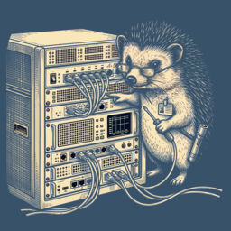

In development · macOS and Linux
IgelServer
A remote console for a headless Linux server. Telemetry, systemd units, Docker containers and qBittorrent over SSH — from a Mac, or from a Steam Deck.
01 / What it does
The server in the cupboard, without the terminal.
Everything goes over one multiplexed SSH connection to the host you already administer. There is no agent to install on the server and no service of ours in between.
Watch the machine breathe
CPU, memory, swap, disk usage, uptime and live network throughput, polled every few seconds and drawn as sparklines and gauges.
Systemd without the pager
Start, stop and restart units, see which ones failed, and read journalctl logs inside the app instead of scrolling a terminal.
Docker, one press at a time
Bring containers up and down, restart them, and follow the logs while they boot — no compose file editing to check on a service.
qBittorrent in the same window
Talk to the qBittorrent WebUI directly: upload .torrent files, normalise magnet links, and keep the queue moving.
Mac and Deck, same idea
A SwiftUI app for macOS and a Rust and Tauri build for Bazzite and Steam Deck, sized for 1280×800 and navigable with the gamepad.
Your SSH key, nothing else
Key-based authentication with the key already on your machine. No password in the cloud and no IgelTools account.
Agent-ready and documented. Protocols, security and the MCP tool reference live in the IgelTools Docs ↗.

Your server, one window away.
Follow development to see the Linux build and the macOS app land together.